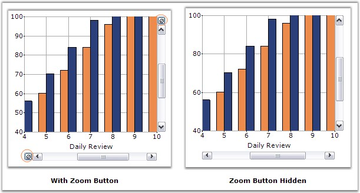

Syncfusion Chart provides a way to access the ZoomOutButton through the ScrollBar instance.
Inorder to hide this Zoom button, if Visible property is set to
false, ZoomButton will be disabled, but there will be an empty space. So
instead of setting Visible property, we can set the ZoomButton size to be
0.
|
[C#]
this.chartControl1.GetVScrollBar(this.chartControl1.PrimaryYAxis).ZoomButton.Size = new Size(0,0); this.chartControl1.GetHScrollBar(this.chartControl1.PrimaryXAxis).ZoomButton.Size = new Size(0, 0); |
|
[VB.NET]
Me.chartControl1.GetVScrollBar(Me.chartControl1.PrimaryYAxis).ZoomButton.Size = New Size(0,0) Me.chartControl1.GetHScrollBar(Me.chartControl1.PrimaryXAxis).ZoomButton.Size = New Size(0, 0) |

Figure 371: Hiding the Chart Zoom Button
This setting will be useful, if you need to display the
scrollbar, without ZoomingCancel operation, or if you need to change the
backcolor and other properties, as ZoomButton is derived from the Button
control.
See Also